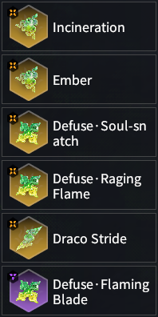
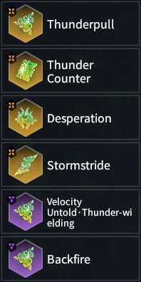
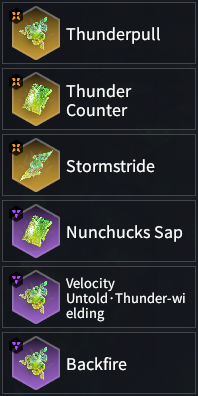
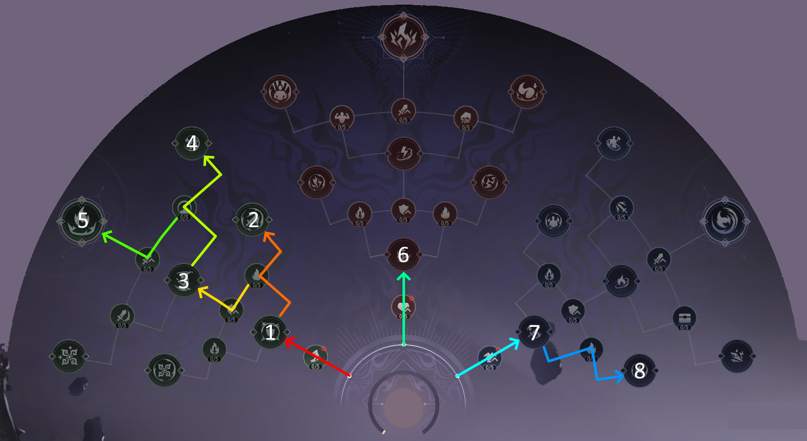
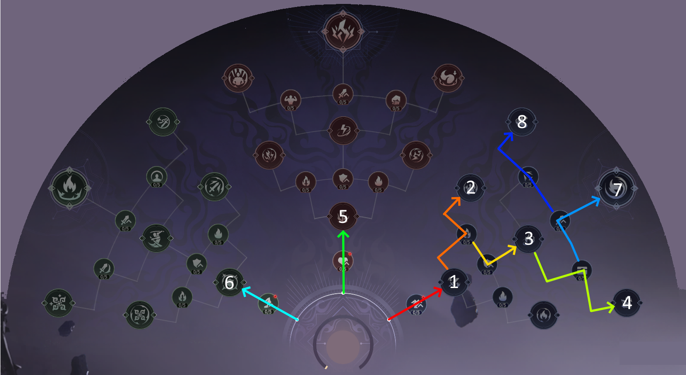

Jade Set Ups
This section will showcase the standard Souljade setups for each damage type,
including their respective strengths and weaknesses.
Ensure you replace the (Ice/Thunder)-Wielding Souljade with the one corresponding to your hero's favored element.
See Wielding Jades for more info.
In terms of damage output, right now Burn builds are at the top, followed by Thunder builds, and lastly Ice builds.
The following builds are listed with no particular order in mind aside from their main damage source.
Difficulty does not denote how strong a build is, but rather how hard it is to use it effectively.
Table of Contents
Burn Builds
| Incinerate | |
|---|---|

Potential Plans:
Thunder Target Attributes: Attack, Health, Increase DMG to Boss, [Windfall], Defuse triggers Recovery |
Difficulty: 

Strengths:
Weaknesses:
Recommended Heroes: Tianhai, Tarka Ji, & Matari Substitute: Copper Ward for Defuse • Aegis-Break for more survivability, but less Burn damage. |
| Skyfire Storm | |
|---|---|

Potential Plans:
Thunder Target Attributes: Attack, Health, Increase DMG to Boss, [Windfall], Defuse triggers Recovery |
Difficulty:

Strengths:
Weaknesses:
Recommended Heroes: Feria Shen & Wuchen Substitute: Defuse • Solidification for Thunder Mastery for more consistent, but lower damage output. |
| Torrent Flames | |
|---|---|
|
Potential Plans:
Thunder Target Attributes: Attack, Health, Increase DMG to Boss, [Windfall], Defuse triggers Recovery |
Difficulty:
Strengths:
Weaknesses:
Recommended Hero: Yueshan Substitute: Defuse • Solidification for Thunder Mastery for ease of use in exchange for Burn damage. |
| Cauterize | |
|---|---|
|

Potential Plans:
Ice Target Attributes: Attack, Defuse triggers Recovery, Increase DMG to Boss, [Windfall], Ice Blast DMG |
Difficulty:
Strengths:
Weaknesses:
Recommended Heroes: Tianhai, Tarka Ji, & Matari Substitute: Defuse • Soul-Snatch for Defuse • Solidification when you have at least 300 Defuse triggers Recovery. |
Thunder Builds
| Thunder Wielder | |
|---|---|

Potential Plans:
Thunder Target Attributes: Attack, Increase DMG to Boss, Divine Thunder DMG, [Windfall], Charged Attack DMG |
Difficulty:
Strengths:
Weaknesses:
Recommended Heroes: Feria Shen, Tianhai, Temulch, Tarka Ji, Kurumi, Yueshan & Wuchen |
| Lightning Rod | |
|---|---|

Potential Plans:
Thunder Target Attributes: Attack, Increase DMG to Boss, Divine Thunder DMG, [Windfall], Charged Attack DMG |
Difficulty:
Strengths:
Weaknesses:
Recommended Heroes: Viper Ning, Tianhai & Wuchen |
| Divine Desperation | |
|---|---|
|

Potential Plans:
Thunder Target Attributes: Attack, Increase DMG to Boss, Divine Thunder DMG, [Windfall], Charged Attack DMG |
Difficulty:
Strengths:
Weaknesses:
Recommended Heroes: Viper Ning, Feria Shen, Tianhai, Temulch, Tarka Ji, Kurumi, Valda Cui, & Yueshan |
| Thunder Sap | |
|---|---|
|

Potential Plan:
Thunder Target Attributes: Attack, Increase DMG to Boss, Divine Thunder DMG, [Windfall], Charged Attack DMG |
Difficulty:
Strengths:
Weaknesses:
Recommended Heroes: Viper Ning, Feria Shen, Tianhai, Temulch, Tarka Ji, Kurumi, Valda Cui, & Yueshan |
Thunderbolt Builds
| Blink Strike | |
|---|---|
|
Potential Plans:
Thunder Target Attributes: Attack, Increase DMG to Boss, Divine Thunder DMG, [Windfall], Charged Attack DMG |
Difficulty:
Strengths:
Weaknesses:
Recommended Hero: Kurumi |
| Lightning Dash | |
|---|---|

Potential Plans:
Ice Target Attributes: Attack, Increase DMG to Boss, Uncharged Attack DMG, [Windfall], Ice Blast DMG |
Difficulty:
Strengths:
Weaknesses:
Recommended Hero: Matari |
| Static Shock | |
|---|---|
|
Potential Plans:
Thunder Target Attributes: Attack, Increase DMG to Boss, Divine Thunder DMG, [Windfall], Uncharged Attack DMG |
Difficulty:
Strengths:
Weaknesses:
Recommended Hero: Viper Ning |
| Thunder Break | |
|---|---|
|
Potential Plans:
Thunder Target Attributes: Attack, Increase DMG to Boss, Divine Thunder DMG, [Windfall], Uncharged Attack DMG |
Difficulty:
Strengths:
Weaknesses:
Recommended Hero: Valda Cui & Feria Shen |
Ice Builds
| Icy Shadow | |
|---|---|

Potential Plans:
Ice Target Attributes: Attack, Increase DMG to Boss, Ice Blast DMG, [Windfall], [Moderation], Charged Attack Damage |
Difficulty:
Strengths:
Weaknesses:
Recommended Heroes: Viper Ning, Feria Shen, Tianhai, Temulch, Kurumi, Valda Cui, Matari, & Wuchen Substitute: Yushan Shadows for Cinderfrost if you aren't comfortable Defusing. |
| Spring's Advent | |
|---|---|
|
Potential Plans:
Ice Target Attributes: Attack, Increase DMG to Boss, Ice Blast DMG, [Windfall], [Moderation], Charged Attack DMG |
Difficulty:
Strengths:
Weaknesses:
Recommended Heroes: Viper Ning, Feria Shen, Tianhai, Temulch, Kurumi, Valda Cui, Matari, & Wuchen |
| Yushan Enigma | |
|---|---|
|
Potential Plans:
Ice Target Attributes: [Moderation], Attack, Increase DMG to Boss, Ice Blast DMG, [Windfall] |
Difficulty:
Strengths:
Weaknesses:
Recommended Heroes: Viper Ning Substitute: Incineration for Thunder Mastery for safer damage output, but less damage. |
| Steam Cannon | |
|---|---|

Potential Plans:
Ice Target Attributes: Attack, Increase DMG to non-Boss, Ice Blast DMG, [Windfall], Uncharged Attack DMG |
Difficulty:
Strengths:
Weaknesses:
Recommended Heroes: Tarka Ji & Yueshan Substitute: Cinderfrost for Yushan Shadows if you are comfortable Defusing the Freeze. |
Wielding Jades
With so many choices in Souljades and Potential Plans, it can be hard to know what build to go with. This section will help for choosing the most optimal Wielding Souljades as well as what Potential Plans they best combo with. Souljades with "-Wielding" in their name gain bonus elemental damage for that corresponding type, making it so you're able to activate Ice Blasts or Divine Thunder faster on enemies using the special attacks they give. They also generally have better DPS than their base counterpart.
Table of Contents
- I. Viper Ning
- II. Feria Shen
- III. Tianhai
- IV. Temulch
- V. Tarka Ji
- VI. Kurumi
- VII. Valda Cui
- VIII. Yueshan
- IX. Matari
- X. Wuchen
Viper Ning
 |

Best used with Ice Blast Potential Plans. 
Best used with Blazing Flame Potential Plans. |
Feria Shen
 |

Best used with Ice Blast Potential Plans. Best used with Blazing Flame or Divine Storm Potential Plans. |
Tianhai
 |

Best used with Ice Blast Potential Plans. 
Best used with Blazing Flame Potential Plans. |
Temulch
 |

Best used with Ice Blast Potential Plans 
Best used with Blazing Flame Potential Plans. |
Tarka Ji
 |

Best used with Blazing Flame Potential Plans. |
Kurumi
 |

Best used with Ice Blast Potential Plans. 
Best used with Blazing Flame or Divine Storm Potential Plans. |
Valda Cui
 |
Best used with Ice Blast Potential Plans. Best used with Blazing Flame or Divine Storm Potential Plans. |
Yueshan
 |

Best used with Blazing Flame Potential Plans. |
Matari
 |

Best used with Ice Blast Potential Plans. Best used with Ice Blast or Blazing Flame Potential Plans. |
Wuchen

Best used with Ice Blast Potential Plans. |
Potential Plans
The way you design your Potential Plans will be the backbone of your playstyle. This page will show you a variety of viable Potential Plans you can work with and where they are most effective.
Video Introduction
Table of Contents
Blazing Flame
This Potential Path focuses on the left Green side.
It increases the damage of your Burns by 55% at base, that scales with any Health % bonuses that you have, including the 20% from hero levels.
Furthermore, it makes your Divine Thunder (excluding Thunder Counter) apply a decent Burn alongside boosting your Martial Skills Aegis-Break and Defuse Counterattack.
Recommended Heroes: All
Flame Transcendence Variant
Focuses on spamming your Aegis-Break for damage output and procing Divine Thunder on enemies,
which then apply a Burn for further increased Honed Status duration.
This variant is recommended for all Thunder builds.
Recommended Heroes: Viper Ning, Feria Shen, Tianhai, Kurumi, Valda Cui, Matari, & Wuchen
Fire Transcendence Variant
Synergizes with the Incineration & Ember Souljades in that it makes all Burns non-lethal
while also granting Honed Status from them alongside successful Defuses.
Burn immunity doesn't become active until you've reached glyph #7. Extremely effective against Burn-based Omens.
Recommended Heroes: Tianhai, Tarka Ji, Yueshan, & Matari
Thunderous Power Variant
For heroes who have lots of hits on their Martial Skills and therefore make great use of Stormstride Sword to increase their DPS.
Recommended Heroes: Feria Shen & Wuchen
Thunder Counter Variant
Meant for builds making use of Thunderpull and Thunder Counter, giving you great sustain from your counters.
Recommended Heroes: All
Elemental Blast
This Potential Path focuses on maximizing elemental accumulation
by boosting the base rate of all attacks and an extreme boost to your Martial Skills, Aegis-Break & Defuse Counterattack.
Ice builds in particular no longer have a dedicated section for them, however, you can still boost your frostbite accumulation rate from two glyphs:
Flame-Thunder Chant and Frost Douse.
However, it does struggle with maintaining Honed Status.
Recommended Heroes: Viper Ning, Feria Shen, Tianhai, Temulch, Kurumi, Valda Cui, Matari, & Wuchen
Divine Aegis-Break Variant
For heroes who still benefit greatly from Honed Rage (Honed Tyranny replacement) to deal great DPS with their
Martial Skill Aegis-Break.
Recommended Heroes: Viper Ning, Feria Shen, Tianhai, Kurumi, Valda Cui, Matari, & Wuchen
Divine Defuse Variant
Alternate path giving increased Honed Duration from successful Defuses, better for those who don't benefit particularly from Honed Rage.
Recommended Heroes: Temulch
Yushan Enigma Variant

With the matching Souljades, makes for an extremely powerful build for Viper Ning if you manage to get at least 100% [Moderation] to activate your ability repeatedly for instant Ice Blasts.
Recommended Heroes: Viper Ning
Divine Storm
This Potential Path primarily emphasizes the Divine Storm glyph, which is located in the middle Red section.
This path greatly increases your Thunderbolt damage and can stack Honed Status quickly the more Thunderbolts you can summon.
Recommended Heroes: Feria Shen, Tarka Ji, Kurumi, Matari, & Wuchen
Full Red Variant

Completely focuses on Thunderbolt based damage output. Great for heroes who can use multiple Thunderbolt Souljades effectively.
Recommended Heroes: Tarka Ji, Kurumi, & Matari
Honed Rage Variant
Combines Thunderbolt damage with Honed Rage, great for Heroes that have either lots of hits on their Martial Skill Aegis-Break to proc Stormstride Sword
and/or who gain DPS from Honed Rage.
Recommended Heroes: Feria Shen, Kurumi, Matari, & Wuchen
HydroFlare
This Potential Path is focused on the Fiery Bath glyph, located in the Blue section on the right.
It is focused on applying Hydroflare as much as possible whether from Ice Blasts, Draco Stride or even Valda Cui's abilities.
Recommended Heroes: Viper Ning, Feria Shen, Tianhai, Temulch, Kurumi, & Valda Cui
Incineration Variant
Can be combined with the Incineration + Ember Souljades for a very risky 1 HP DPS build. Has an extremely high skill floor to use effectively, mainly for those looking for a challenge.
Cannon Variant
Grants the Cannon extra elemental accumulation, while allowing you to cause Hydroflares from Ice Blasts for major burst damage on mobs.